ENGINE UNIT > DISASSEMBLY |
| 1. REMOVE NO. 2 IDLER PULLEY SUB-ASSEMBLY |
 |
Remove the pulley bolt, cover plate and idler pulley.
| 2. REMOVE NO. 3 TIMING BELT COVER SUB-ASSEMBLY LH |
 |
Detach the 3 wire clamps and disconnect the camshaft timing oil control valve connector and control motor connector.
 |
Disconnect the camshaft position sensor connector.
Disconnect the camshaft position sensor wire from the 2 wire clamps on the timing belt cover.
Remove the wire grommet from the timing belt cover.
Remove the 4 bolts.
Pull the cover outward, pull the camshaft position sensor wire out of the cover, and remove the cover.
| 3. REMOVE NO. 3 TIMING BELT COVER SUB-ASSEMBLY RH |
 |
Remove the 3 bolts, nut and timing belt cover.
| 4. REMOVE NO. 2 TIMING BELT COVER SUB-ASSEMBLY |
 |
Remove the 2 bolts and detach the 2 claws, and then remove the No. 2 timing belt cover.
| 5. REMOVE V-RIBBED BELT TENSIONER ASSEMBLY |
 |
Remove the bolt, 2 nuts and V-ribbed belt tensioner.
| 6. REMOVE FAN BRACKET SUB-ASSEMBLY |
 |
Remove the 2 nuts, 2 bolts and fan bracket.
| 7. REMOVE CRANKSHAFT DAMPER SUB-ASSEMBLY |
 |
Using SST, hold the crankshaft damper and loosen the pulley bolt. Further loosen the bolt until 2 or 3 threads are screwed into the crankshaft.
 |
Using SST and the pulley bolt, remove the crankshaft damper.
| 8. REMOVE NO. 1 TIMING BELT COVER |
 |
Remove the 4 bolts and timing belt cover.
| 9. REMOVE TIMING BELT COVER SPACER |
 |
Remove the cover spacer and gasket.
| 10. REMOVE NO. 1 CRANKSHAFT POSITION SENSOR PLATE |
 |
Remove the position sensor plate from the crankshaft.
| 11. REMOVE CAMSHAFT POSITION SENSOR ASSEMBLY |
 |
Remove the bolt, stud bolt and camshaft position sensor.
| 12. SET NO. 1 CYLINDER TO TDC/COMPRESSION |
 |
Temporarily install the pulley bolt.
Rotate the crankshaft clockwise so that the timing marks on the crankshaft timing pulley and camshaft timing pulleys are as shown in the illustration.
| 13. REMOVE TIMING BELT |
 |
Alternately loosen the 2 bolts, then remove the bolts, timing belt tensioner and dust seal.
Remove the timing belt.
| 14. REMOVE NO. 1 TIMING BELT IDLER SUB-ASSEMBLY |
 |
Using a 10 mm hexagon wrench, remove the idler shaft, timing belt idler and plate washer.
| 15. REMOVE NO. 2 TIMING BELT IDLER SUB-ASSEMBLY |
 |
Remove the bolt and timing belt idler.
| 16. REMOVE CRANKSHAFT TIMING PULLEY |
 |
Using SST, remove the timing pulley.
| Item | Parts number |
| SST (Bolt A) | 09953-05020 |
| SST (Bolt B) | 09953-05010 |
| 17. REMOVE NO. 1 ENGINE HANGER |
Remove the 2 bolts and engine hanger.
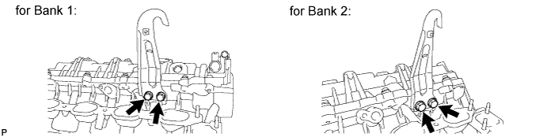
| 18. REMOVE SPARK PLUG |
Remove the 8 spark plugs.
| 19. REMOVE OIL FILLER CAP SUB-ASSEMBLY |
Remove the oil filler cap.
Remove the gasket from the oil filler cap.
| 20. REMOVE OIL FILLER CAP HOUSING |
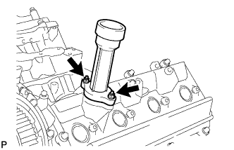 |
Remove the 2 nuts, housing and gasket.
| 21. REMOVE CYLINDER HEAD COVER SUB-ASSEMBLY LH |
 |
Remove the 9 bolts, cylinder head cover and gasket.
| 22. REMOVE CYLINDER HEAD COVER SUB-ASSEMBLY |
 |
Remove the 9 bolts, cylinder head cover and gasket.
| 23. REMOVE SPARK PLUG TUBE GASKET |
 |
Bend the 8 ventilation case claws of the cylinder head cover to an angle of 90° or more.
Using a screwdriver, pry out the gaskets.
| 24. REMOVE SEMICIRCULAR PLUG |
Remove the 4 semicircular plugs from the cylinder heads.
| 25. REMOVE CAMSHAFT TIMING PULLEY SUB-ASSEMBLY LH |
 |
Hold the hexagonal portion of the camshaft with a wrench and remove the 4 bolts indicated by the arrows in the illustration and timing pulley.
| 26. REMOVE CAMSHAFT TIMING PULLEY |
 |
Using the pulley set bolt, turn the crankshaft counterclockwise by approximately 45°.
 |
Hold the hexagonal portion of the camshaft with a wrench and remove the 4 bolts indicated by the arrows in the illustration and timing pulley.
| 27. REMOVE REAR NO. 2 TIMING BELT PLATE RH |
 |
Remove the 2 bolts, stud bolt and timing belt plate.
| 28. REMOVE REAR TIMING BELT PLATE RH |
 |
Remove the bolt and rear timing belt plate.
| 29. REMOVE REAR NO. 2 TIMING BELT PLATE LH |
 |
Remove the 2 bolts and timing belt plate.
| 30. REMOVE REAR TIMING BELT PLATE LH |
 |
Remove the bolt and rear timing belt plate.
| 31. REMOVE CAMSHAFT (for Bank 1) |
 |
Bring the service bolt hole of the sub-gear upward by turning the hexagonal portion of the exhaust camshaft with a wrench.
Secure the sub-gear to the driven gear with a service bolt.
| Thread Diameter | Thread Pitch | Bolt Length |
| 6.0 mm | 1.0 mm | 16 to 20 mm (0.630 to 0.787 in.) |
 |
Using a wrench, turn the camshaft so that the timing marks (2 dot marks each) on the camshaft drive and driven gears are aligned, as shown in the illustration.
 |
Uniformly loosen and remove the 22 bearing cap bolts in several steps, in the order shown in the illustration.
 |
Remove the cap bolts, 4 seal washers, oil feed pipe, 9 bearing caps, camshaft housing plug, oil control valve filter and camshafts.
| 32. REMOVE CAMSHAFT (for Bank 2) |
 |
Bring the service bolt hole of the sub-gear upward by turning the hexagonal portion of the exhaust camshaft with a wrench.
Secure the sub-gear to the driven gear with a service bolt.
| Thread Diameter | Thread Pitch | Bolt Length |
| 6.0 mm | 1.0 mm | 16 to 20 mm (0.630 to 0.787 in.) |
 |
Using a wrench, turn the camshaft so that the timing marks (1 dot mark each) on the camshaft drive and driven gears are aligned, as shown in the illustration.
 |
Uniformly loosen and remove the 22 bearing cap bolts in several steps, in the order shown in the illustration.
 |
Remove the cap bolts, 4 seal washers, oil feed pipe, 9 bearing caps, camshaft housing plug, oil control valve filter and camshafts.
| 33. REMOVE VALVE LIFTER |
 |
Remove the valve lifters and adjusting shims from the cylinder head.
| 34. REMOVE CYLINDER HEAD LH |
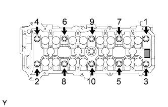 |
Uniformly loosen the 10 cylinder head bolts on the cylinder head in several passes, in the sequence shown in the illustration.
Remove the bolts and plate washers.
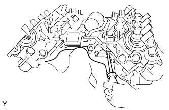 |
Remove the cylinder head by prying between the cylinder block and cylinder head with a screwdriver.
| 35. REMOVE CYLINDER HEAD GASKET LH |
| 36. REMOVE CYLINDER HEAD SUB-ASSEMBLY |
|
Remove the 9 bolts, cylinder head cover and gasket.
| 37. REMOVE CYLINDER HEAD GASKET RH |
| 38. REMOVE CAMSHAFT TIMING TUBE ASSEMBLY |
 |
Mount the hexagonal portion of the camshaft in a vise.
Remove the screw plug and seal washer.
 |
Using a 10 mm hexagon wrench, remove the bolt and timing tube.
| 39. REMOVE CAMSHAFT DRIVE GEAR |
 |
Using SST and a 5 mm hexagon wrench, remove the 4 bolts, drive gear and oil seal.
| 40. REMOVE CAMSHAFT SUB-GEAR |
 |
Mount the hexagonal portion of the camshaft in a vise.
 |
Using SST, turn the sub-gear clockwise, and remove the service bolt.
 |
Using snap ring pliers, remove the snap ring.
Remove the wave washer, sub-gear and gear spring.
| 41. REMOVE WATER PUMP ASSEMBLY |
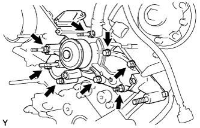 |
Remove the 5 bolts, 2 stud bolts, nut, water pump and gasket.
Remove the O-ring from the water by-pass pipe.
| 42. REMOVE OIL PRESSURE SENDER GAUGE ASSEMBLY |
 |
Disconnect the sender gauge connector.
Remove the sender gauge.
| 43. REMOVE OIL FILTER BRACKET SUB-ASSEMBLY |
 |
Remove the bolt, nut, stud bolt, oil filter bracket and gasket.
| 44. REMOVE NO. 2 OIL PAN SUB-ASSEMBLY |
 |
Remove the 8 bolts and 2 nuts.
 |
Insert the blade of an oil pan seal cutter between the oil pans, cut off applied sealer and remove the No. 2 oil pan.
| 45. REMOVE OIL PAN SUB-ASSEMBLY |
 |
Remove the 19 bolts and 2 nuts.
 |
Using a screwdriver, remove the oil pan by prying between the oil pan and cylinder block as shown in the illustration.
| 46. REMOVE NO. 1 OIL PAN BAFFLE PLATE |
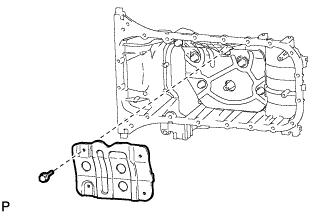 |
Remove the 4 bolts and baffle plate.
| 47. REMOVE NO. 2 OIL PAN BAFFLE PLATE |
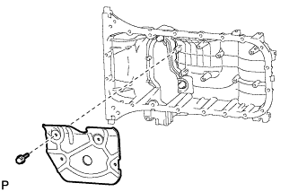 |
Remove the 4 bolts and baffle plate.
| 48. REMOVE NO. 3 OIL PAN BAFFLE PLATE |
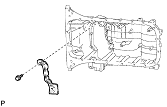 |
Remove the 2 bolts and baffle plate.
| 49. REMOVE OIL STRAINER SUB-ASSEMBLY |
 |
Remove the 2 bolts, 2 nuts, oil strainer and gasket.
| 50. REMOVE OIL PUMP ASSEMBLY |
 |
Using a 6 mm hexagon wrench, remove bolt A.
Remove the 6 bolts and stud bolt.
 |
Using a screwdriver, remove the oil pump by prying the portions between the oil pump and cylinder block shown in the illustration.
 |
Remove the O-ring from the cylinder block.
| 51. REMOVE OIL PUMP SEAL |
 |
Using a screwdriver and wooden block, pry out the oil seal.
| 52. REMOVE ENGINE REAR OIL SEAL RETAINER |
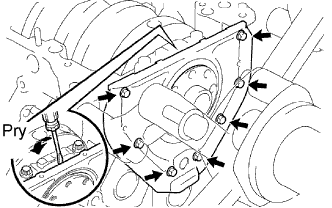 |
Remove the 7 bolts.
Using a screwdriver, remove the oil seal retainer by prying in between the oil seal retainer and crankshaft bearing cap.
Remove the O-ring.
| 53. REMOVE ENGINE REAR OIL SEAL |
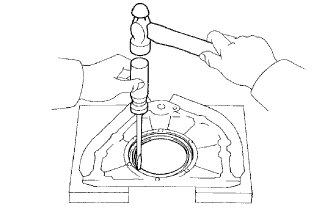 |
Place the rear oil seal retainer on wooden blocks.
Using a screwdriver and hammer, tap out the oil seal.
| 54. REMOVE CYLINDER BLOCK WATER DRAIN COCK SUB-ASSEMBLY |
Remove the 2 drain cock plugs from the drain cock.
Remove the 2 drain cocks.
| 55. REMOVE CYLINDER BLOCK UNION |
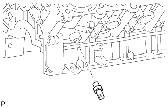 |
Remove the union from the cylinder block.